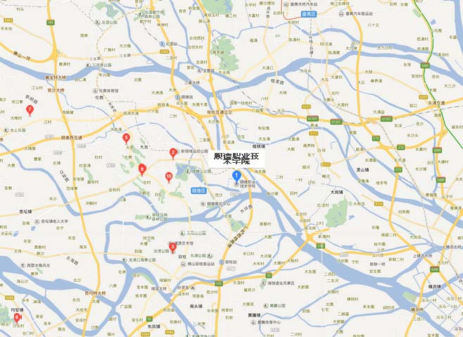

梅苏特·厄齐尔（Mesut Özil），1988年10月15日出生于德国盖尔森基兴，德国足球运动员，场上司职前腰，效力于英超的阿森纳足球俱乐部。
2005年，厄齐尔被沙尔克04足球俱乐部看中，便签约加入沙尔克04青年队。2007年至2010年夏天，厄齐尔在云达不来梅足球俱乐部共效力过三个赛季，夺得过一次德国杯冠军。2010年，厄齐尔加盟至西甲皇家马德里足球俱乐部，在皇马效力了三个赛季，跟随皇马夺得过2010-11赛季西班牙国王杯和2011-12赛季西班牙甲级联赛冠军。
2013年9月3日，厄齐尔加盟至阿森纳，以5000万欧元的转会费成为阿森纳新的历史标王 [2] 。2014年，厄齐尔帮助阿森纳夺得英格兰足总杯和社区盾杯两个冠军。
| 身高 | 体重 | 特点 | 别名 | 国家 |
|---|---|---|---|---|
| 181cm | 75kg | 传球大师，助攻王 | 272，大眼，厄祖 | 德国 |
| 所属球队 | 位置 | 俱乐部号码 | 星座 | 惯用脚 |
| 阿森纳 | 前腰，边前位 | 11号 | 天枰座 | 左脚 |